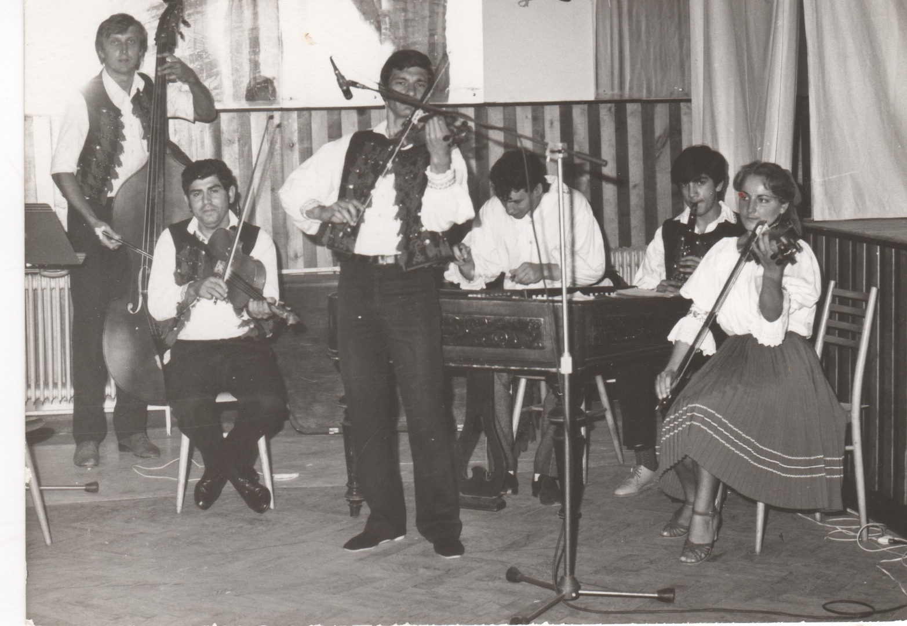
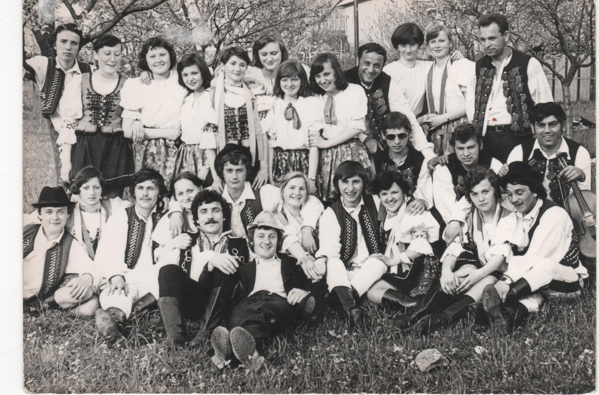

Súčasnosť FS Topľan je spojená so zmenami, ktoré v súbore nastali. Jednou z hlavným zmien je výmena pozície vedúceho hudby. Na miesto Mgr. Petra Zajaca nastúpil súčasný prímaš súboru, Stanislav Bakaľár, ktorý vedie hudobnú zložku súboru od roku 2016 . Zmena nastala aj v tanečnej zložke. Kolektív súboru sa rozšíril o nové tanečné posily, z rôznych vekových kategórií. Vedúcim súboru je naďalej Pavol Švač a funkcia tanečného pedagóga patrí DiS. Art. Tatiane Švačovej. FS Topľan tak ako aj po iné roky absolvuje počas roka približne 30 vystúpení na domácej aj zahraničnej pôde. Počas svojej už viac ako 44 ročnej existencie sa snaží súbor prezentovať tance a spevy z rôznych oblastí východného Slovenska. Dúfame, že naše nadšenie pre folklór nás bude inšpirovať aj naďalej a podarí sa nám ho preniesť aj na našich fanúšikov a divákov
História FS Topľan sa začína v roku 1973. V roku 1975 sa tanečný krúžok "Kožiar", pôsobiaci pri Kožiarskom závode v Giraltovciach, pomenováva podľa rieky tečúcej Šarišom na FS Topľan.
 Nové tisícročie prinieslo so sebou nové zmeny. Vedúcim súboru sa stal JURAJ HAVRILA a členovia súboru si vytvorili vlastný výbor, ktorého hlavnou úlohou bolo zabezpečovanie vystúpení, rozdelenie financií a komunikáciu s mestom.
Po dvojročnej vedúcej pozícii sa Juraj Havrila vzdal svojej funkcie vedúceho súboru a riadanie súboru preberajú dlhodobý členovia tanečnej zložky Mgr. MIRIAM ELIAŠOVÁ a PAVOL ŠVAČ.